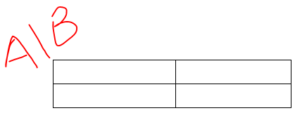
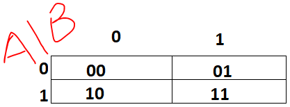
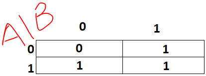
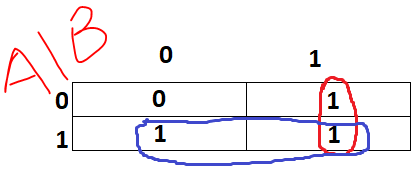

Examples
2 Variable Karnaugh Maps
Based on the steps on the left, we will explain the creation of 2 variable Karnaugh Maps using the expression:
AB + BA + AB
Step 1
The Expression "
AB + BA + AB" contains
2 unique variables.
Thus, a grid must be made which contains 2
2 (4) cells. When labelling 2 variable k-maps the values on the left correspond to the possible states of the most significant bit (in this case
A) while
the values on the top correspond to the possible states of the least significant bit (in this case
B)

Step 2
This table corresponds to the expression:
AB + BA + AB
| A |
B |
Output |
| 0 |
0 |
0 |
| 0 |
1 |
1 |
| 1 |
0 |
1 |
| 1 |
1 |
1 |
Each cell position in the table must correspond to input values from the truth table of the expression.
Thus, the cells will be read as coordinates.

Therefore the value of the cell must correspond to the output of the particular input coordinate in the table.
Thus the final representation of the kmap is

Step 3
After grouping the kmap now looks like

The input combinations of each group is:
Group 1 (Blue):
BBA
Group 2 (Red):
AAB
When simplified, the input combination of each group is:
Group 1 (Blue): A
Group 2 (Red): B
(Since opposite inputs will cancel - Complement property)
Since there are 2 separate groups, these must be OR'd to create the final simplified expression.
Thus, the final simplified expression is:
A + B